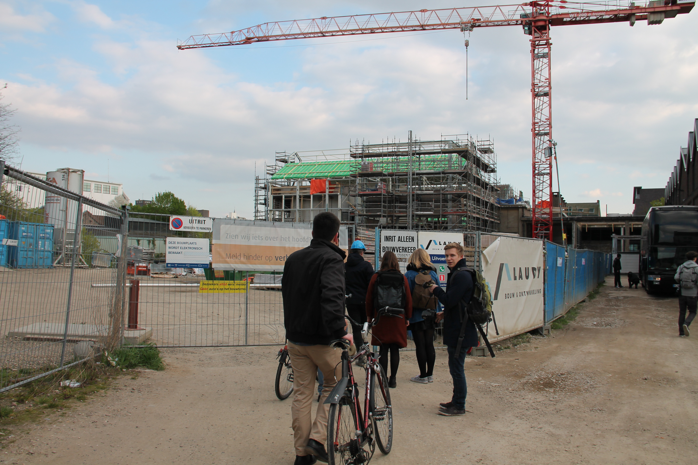
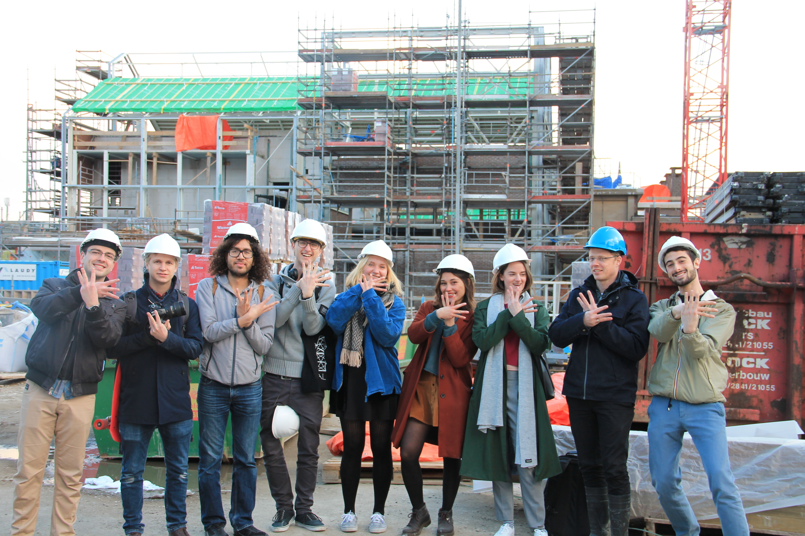

WE Festival and Lumière Cinema: Let Maastricht’s film culture flourish at The WE Film Festival
On Monday 21st April, the Kichaka and WE Festival team ventured out to view the new Lumière building located at Bassin 88. We took a look around the building that is about to be transformed into a beautiful space. We started the adventure by entering the back entrance. Later on we interviewed David Dupree, the artistic director of the Lumière cinema, and Jonas Vacek and Aiman Hassani who are Film Festival directors.  The new Lumière building will be ready this coming September (2016). It is of great importance for the Lumière to move there, as Dupree mentions that they truly believe in the Sphinx Quarter idea (More information at the end of the article). They are taking over the former sphinx factory which previously housed steam engines to generate power for the whole plant. Soon, it will have 6 screening rooms, with their largest auditorium fitting 160 people and it will be open every day from 12pm to 2am. Most people will recognise the new Lumière by the restaurant, which will be designed by the ex-owner and designer of the The Hotel New York in Rotterdam. The new building will stay true to its cosy predecessor, but simultaneously spoil the clientele with many more features and perks. The cinema will be open to student initiatives, which can coordinate film screenings. A student programme group is intended to start on a weekly basis for fun and educational screenings, that can correspond to a curriculum of the different faculties, which share ideas to a broader audience. (INSERT SLIDER PICS HERE) David Dupree, the artistic director of Lumière cinema, together with his colleague, Nico Haenen, are responsible for the transition from Lumière Bogaardenstraat to Bassin 88, which will be the official address of the new building. The Lumière cinema was founded in 1976 - come October, it will be celebrating its 40 years of existence. Many of the film theatres that were founded in the beginning of the 70’s came out of a left-wing movement, with aims to change visitors views on the world (and eventually the world) by showing films that were not displayed in commercial cinemas. Over time the films became less political, although the message still remained the same. Who knows whether films got more tame or the world less tough? Anyhow, the intention still remained to show films that were not screened by the main stream industry. However, Dupree mentions that there has been a grey zone between what is commercial and what is not. Even though there is this terminology ‘Independent Cinema’, it becomes unclear what is independent and what is not. For instance, the well-known Coen brothers make films for the undeniably commercial film studio Universal Pictures, even though these films are referred to as ‘Independent Cinema’. Dupree tells us what is different about the Lumière. There are two things that distinguish the Lumière from commercial cinemas, for example the Pathè that is present in Maastricht. More than 65% of films screened at the Lumière have a strong focus on European films - sparing you the typical Hollywood ending with their more sincere tones. Furthermore, they organise a lot of activities that do not necessarily generate profit, for example educational lectures and debates. Dupree mentions that the core business of Lumière is not the actual showing of a certain film but rather the discussion afterwards - either organised by them or informally at the cafe, and in the future at their restaurant. The target groups are diverse, but mostly reaching older people. Dupree even suggests females between 50-65 are the main demographic. He mentions further, that in order to target other groups, they organise institutional screenings and, of course, are collaborating with the WE Festival. *** Side note: David enjoys slow cinema from Asia and American Indie films. *** (INSERT SLIDER PICS HERE) We now turn to the WE team, broaching the subject of the collaboration between the Lumière and the WE festival. How did it all start and come together? Jonas reached out to David back in September to get the ball rolling with the Film Festival. Since then, they have been working on the programme, which will start on the 28th of April. For Aiman, who belongs to a non-profit called wedoWe, the type of screenings that the Lumière shows are important for him. Growing up in the Netherlands, him and his dad would always watch films and talk about them afterwards. Even though he used to love cinema, he would notice that it was always very “one colour”: There would always be one skin colour as well as certain monotony in content and making. Tell us more about the Film Festival! The whole festival theme is entitled ‘Different perspectives’. The film festival has some core topics that we use as a framework such as Sustainability, LGBTQ, Co-existence and Multicultural society. Each day is dedicated to a distinct theme with screenings at the Lumière and the Brandweer. Each block has a sub topic like LGBTQ. Throughout the festival there will be Q&A’s, Lectures and Workshops. Both, Jonas and Aiman, are particularly excited for the ‘One Night Stand’ workshop, where essentially the participants will have to create a film in the same length it would take you to have a one night stand. The films made will later be screened with a chance to win an award for the best result. Aiman aims to “lower barriers for people to change the world” (his motto from his non-profit). The aim for this workshop is to show people how to make a film within 10 hours. Both parties decided that the festival should screen films that are in the circuit within the Lumière with an addition of screenings that were chosen from WE. The Lumière is responsible for bringing films like The Lobster, Transit Havana and others for the Film Festival via film submission platforms. What Dupree liked about this initiative was that that the WE group asked for good projection quality, for him this was new. Normally, students or external initiatives never care about projection quality in the first place. Aiman is extremely happy and proud that the film festival offers such great diversity in the type of content, that he would have loved to see whilst growing up. The power of WE brings people from older and younger generations together, which appeals to the blend of films that we have. Going Dutch Aiman laughs whilst telling us about the crash course he gave to Jonas about Dutch Directors. He has been watching dutch films for as long as he can remember. He mentions three talented directors who are part of the series: 1. Sam De Jong, who is currently in New York working on his second feature. For the festival we will be screening his first feature film, “Prins”, which was nominated for a golden calf, the dutch equivalent of an oscar. 2. Mees Peijnenburg (who makes really awesome stuff), will be showing his complete works in chronological order, such that the ideas that he wants to communicate, develop with his audience. This is evident as his message becomes stronger and more pronounced as the works progress. 3. Alex Pitstra is a documentary filmmaker, and will be here to talk after his film. Aiman mentions how Alex uses his own personal story to share something that we all yearn for and belong to: Our life-long search for our true self. He is not afraid to show all of his sides. This ties into our theme of a multicultural society and co-existence through cultivating one’s sense of self. We chose these three directors because they all display a different aspect of philosophies that we cling to. At the end of the day, the festival aims to show specific stories that have a universal language within them. In all of these different themes and cultures we all desire the same thing. The WE Film Festival will start from the 28th of April and proceeds until the 30th. Do not miss out on this great collaboration that ties together music, film and art lovers all over Maastricht. Enjoy films that you wouldn’t normally have the opportunity to see in conventional cinemas! Both parties are looking forward to the film festival and cannot wait to screen the amazing films that are lined up and waiting of you! For more information about the WE Film Festival check out this link: https://we-festival.org/film-festival/ For more information about the Lumière cinema check out this link: http://www.lumiere.nl/en/ For more information about the Sphinx Quarter check out this link: http://www.eighty8things.nl/sphinxkwartier-maastricht/ 